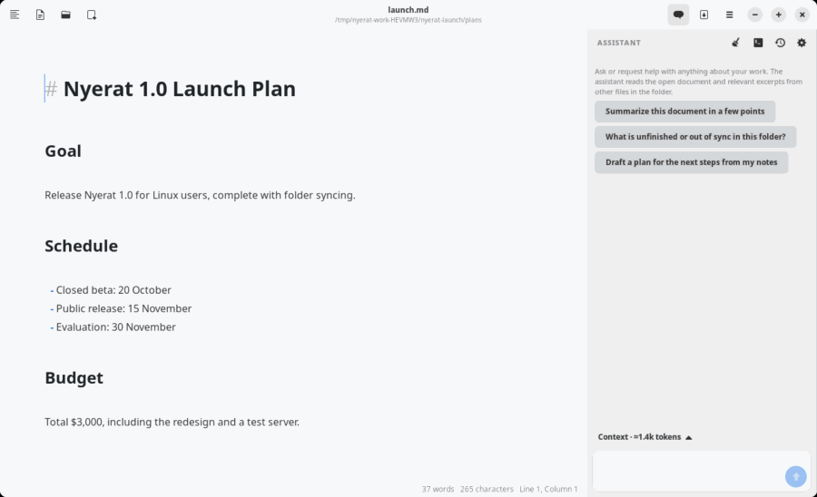
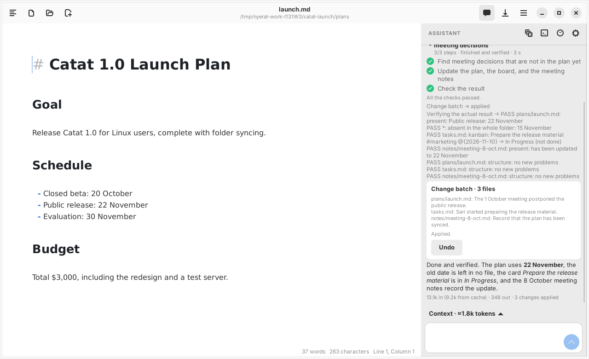

Agent
Plans and verification
For a request that needs several steps, the agent writes a plan that is visible in the panel, works through it with proposals, and then checks the real result before declaring it finished.

The work plan
The agent calls set_work to record the goal and up to 20 steps, each with the status pending, done, or blocked. The plan appears in the panel and is updated as there is progress.
The work status: running, pending, failed, or done and verified. The finished status can only be reached when every step is done and the verification passes.
Verifying the result
After changes are applied, the agent calls verify_work with criteria from your request. The verification rereads the contents on disk or in the editor (not a cache), and then checks:
| Kind | Checks |
|---|---|
present / absent | Exact text must be present or absent in a file, or in the whole folder with the file "*", e.g. making sure the old date is left nowhere |
kanban | A card is in a given list with a given done/not done status |
structure | The number of table cells, empty headings or headings that skip a level, unclosed code blocks, and links to Markdown files that do not exist |
For every changed file, the verification automatically adds a structure check, makes sure that a deleted or moved file is really not at its old place, and requires at least one criterion from the agent.

The structure is compared with the contents from before the work started. Old problems are named in the result, but do not fail the work.
Resuming work
The plan, the action journal, and the verification result are saved together with the conversation. If the app is closed or the connection drops halfway, open the conversation again: the Resume work button appears and the agent continues from the last step. See Recovery.
What is not proven yet
The verification proves concrete criteria, not the whole semantic consistency of a document. The quality of the check still depends on the criteria the agent chooses; there is no automatic contradiction check yet.